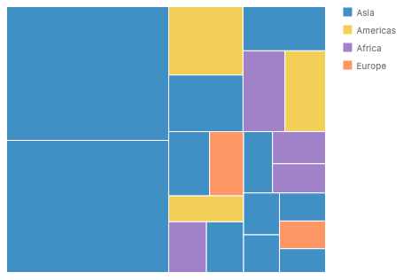
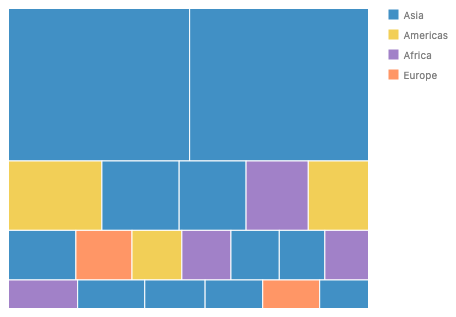
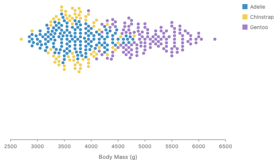
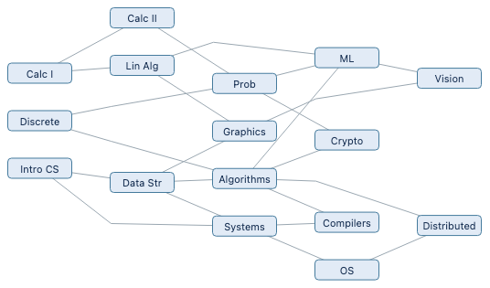
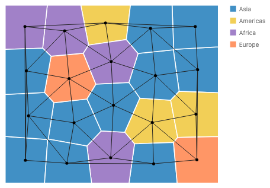
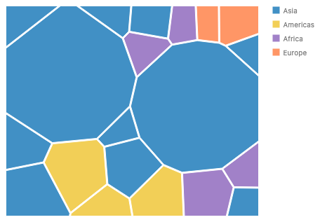

<title>Layouts in User Space</title>
<meta name="claude:viewport-fit-sides" content="cover" />
<link rel="preconnect" href="https://fonts.googleapis.com" />
<link
  href="https://fonts.googleapis.com/css2?family=IBM+Plex+Mono:wght@400;500&family=IBM+Plex+Sans:wght@400;500;600&family=Source+Serif+4:opsz,wght@8..60,500;8..60,600&display=swap"
  rel="stylesheet"
/>
<script src="https://cdnjs.cloudflare.com/ajax/libs/highlight.js/11.9.0/highlight.min.js"></script>
<script src="https://cdnjs.cloudflare.com/ajax/libs/highlight.js/11.9.0/languages/python.min.js"></script>
<script src="https://cdnjs.cloudflare.com/ajax/libs/highlight.js/11.9.0/languages/r.min.js"></script>
<style>
  /* Layout idea: tabs over one reading column; the proposal tab is a gallery of cards (image, proposed code, current code). */
  :root {
    --bg: #f6f7f9;
    --surface: #ffffff;
    --ink: #1d2430;
    --muted: #5b6575;
    --line: #dde2ea;
    --accent: #2f6fa8;
    --accent-soft: #e6eef7;
    --warn: #9a5b00;
    --warn-soft: #fbf1e1;
    --add: #e3f4e6;
    --del: #fbe7e7;
    --code-bg: #f1f3f7;
    --tok-key: #8a3ab9;
    --tok-str: #2c7a3f;
    --tok-num: #b0521b;
    --tok-com: #7d8695;
    --tok-fn: #2f6fa8;
    --display: "Source Serif 4", Georgia, serif;
    --body: "IBM Plex Sans", system-ui, sans-serif;
    --mono: "IBM Plex Mono", ui-monospace, Menlo, monospace;
    color-scheme: light;
  }
  @media (prefers-color-scheme: dark) {
    :root:not([data-theme="light"]) {
      --bg: #12161d;
      --surface: #1a1f28;
      --ink: #e5e9f0;
      --muted: #9aa4b4;
      --line: #2c3340;
      --accent: #7fb2e5;
      --accent-soft: #1f2d3d;
      --warn: #f0b860;
      --warn-soft: #2e2516;
      --add: #1d3324;
      --del: #3a1f22;
      --code-bg: #151a22;
      --tok-key: #c99be6;
      --tok-str: #8fd19e;
      --tok-num: #f0a46e;
      --tok-com: #7d8695;
      --tok-fn: #7fb2e5;
      color-scheme: dark;
    }
  }
  :root[data-theme="dark"] {
    --bg: #12161d;
    --surface: #1a1f28;
    --ink: #e5e9f0;
    --muted: #9aa4b4;
    --line: #2c3340;
    --accent: #7fb2e5;
    --accent-soft: #1f2d3d;
    --warn: #f0b860;
    --warn-soft: #2e2516;
    --add: #1d3324;
    --del: #3a1f22;
    --code-bg: #151a22;
    --tok-key: #c99be6;
    --tok-str: #8fd19e;
    --tok-num: #f0a46e;
    --tok-com: #7d8695;
    --tok-fn: #7fb2e5;
    color-scheme: dark;
  }
  * {
    box-sizing: border-box;
  }
  body {
    margin: 0;
    background: var(--bg);
    color: var(--ink);
    font: 16px/1.6 var(--body);
  }
  main {
    max-width: 1120px;
    margin: 0 auto;
    padding: 32px 16px 80px;
  }
  h1,
  h2,
  h3 {
    font-family: var(--display);
    line-height: 1.25;
    text-wrap: balance;
  }
  h1 {
    font-size: 2.1rem;
    margin: 0 0 8px;
  }
  h2 {
    font-size: 1.5rem;
    margin: 48px 0 12px;
  }
  h3 {
    font-size: 1.15rem;
    margin: 28px 0 8px;
  }
  p,
  li {
    max-width: 72ch;
  }
  a {
    color: var(--accent);
  }
  code {
    font-family: var(--mono);
    font-size: 0.88em;
    background: var(--code-bg);
    padding: 1px 4px;
    border-radius: 3px;
  }
  pre {
    margin: 0;
    background: var(--code-bg);
    border: 1px solid var(--line);
    border-radius: 6px;
    padding: 10px 0;
    overflow-x: auto;
    font-size: 12.5px;
    line-height: 1.5;
  }
  pre code {
    background: none;
    padding: 0;
    font-size: inherit;
    display: block;
  }
  pre code .ln {
    display: block;
    padding: 0 12px;
  }
  pre code .ln.add {
    background: var(--add);
  }
  pre code .ln.del {
    background: var(--del);
  }
  .hljs-keyword,
  .hljs-built_in {
    color: var(--tok-key);
  }
  .hljs-string {
    color: var(--tok-str);
  }
  .hljs-number,
  .hljs-literal {
    color: var(--tok-num);
  }
  .hljs-comment {
    color: var(--tok-com);
    font-style: italic;
  }
  .hljs-title,
  .hljs-title.function_ {
    color: var(--tok-fn);
  }
  .lede {
    font-size: 1.05rem;
    color: var(--muted);
    max-width: 72ch;
    margin: 0;
  }
  .tabs {
    display: flex;
    gap: 4px;
    border-bottom: 1px solid var(--line);
    margin: 24px 0 0;
    flex-wrap: wrap;
  }
  .tabs button {
    font: 500 0.95rem var(--body);
    color: var(--muted);
    background: none;
    border: 1px solid transparent;
    border-bottom: none;
    padding: 9px 16px;
    border-radius: 6px 6px 0 0;
    cursor: pointer;
    margin-bottom: -1px;
  }
  .tabs button[aria-selected="true"] {
    color: var(--ink);
    background: var(--surface);
    border-color: var(--line);
  }
  .tabs button:focus-visible {
    outline: 2px solid var(--accent);
    outline-offset: 2px;
  }
  .panel[hidden] {
    display: none;
  }
  .rules {
    background: var(--surface);
    border: 1px solid var(--line);
    border-top: none;
    border-radius: 0 0 8px 8px;
    padding: 16px 22px;
    margin: 0 0 8px;
  }
  .rules ul {
    margin: 0;
    padding-left: 20px;
  }
  .rules li {
    margin: 4px 0;
  }
  .gallery {
    display: grid;
    grid-template-columns: minmax(0, 1fr);
    gap: 16px;
    margin-top: 20px;
    max-width: 820px;
  }
  .card .imgwrap img {
    max-width: min(100%, 520px);
  }
  .card {
    background: var(--surface);
    border: 1px solid var(--line);
    border-radius: 8px;
    padding: 14px;
    display: flex;
    flex-direction: column;
    gap: 10px;
    min-width: 0;
  }
  .card h3 {
    margin: 0;
    font-size: 1.05rem;
  }
  .card .note {
    font-size: 0.88rem;
    color: var(--muted);
    margin: 0;
  }
  .card img {
    max-width: 100%;
    height: auto;
    display: block;
    margin: 0 auto;
    border-radius: 4px;
    background: #fff;
  }
  .card .imgwrap {
    background: #fff;
    border-radius: 6px;
    border: 1px solid var(--line);
    padding: 6px;
  }
  .label {
    font: 600 0.72rem/1 var(--body);
    text-transform: uppercase;
    letter-spacing: 0.06em;
    color: var(--muted);
    margin: 2px 0 -4px;
  }
  .label.prop {
    color: var(--accent);
  }
  .tag {
    display: inline-block;
    font: 500 0.7rem/1 var(--body);
    text-transform: uppercase;
    letter-spacing: 0.05em;
    padding: 4px 7px;
    border-radius: 3px;
    margin-left: 6px;
    vertical-align: 2px;
  }
  .tag.today {
    background: var(--accent-soft);
    color: var(--accent);
  }
  .tag.proto {
    background: var(--warn-soft);
    color: var(--warn);
  }
  .tag.sketch {
    background: var(--code-bg);
    color: var(--muted);
  }
  .none {
    font-size: 0.88rem;
    color: var(--muted);
    background: var(--code-bg);
    border: 1px dashed var(--line);
    border-radius: 6px;
    padding: 8px 12px;
    margin: 0;
  }
  details {
    background: var(--surface);
    border: 1px solid var(--line);
    border-radius: 8px;
    margin: 12px 0;
  }
  details > summary {
    cursor: pointer;
    padding: 12px 16px;
    font-weight: 600;
  }
  details > .inner {
    padding: 0 18px 16px;
  }
  details.code > summary {
    font-weight: 500;
    font-size: 0.88rem;
    padding: 6px 10px;
    color: var(--muted);
  }
  details.code {
    border: none;
    background: none;
    margin: 0;
  }
  details.code > .inner {
    padding: 0;
  }
  .strip {
    display: grid;
    grid-template-columns: repeat(auto-fill, minmax(min(100%, 210px), 1fr));
    gap: 10px;
  }
  .strip figure {
    margin: 0;
    background: #fff;
    border: 1px solid var(--line);
    border-radius: 6px;
    padding: 6px;
  }
  .strip figcaption {
    font-size: 0.8rem;
    color: #444;
    padding: 4px 2px 0;
  }
  .strip figcaption b {
    font-family: var(--mono);
    font-weight: 500;
    color: #1d2430;
  }
  .strip img {
    width: 100%;
    height: auto;
    display: block;
  }
  .decisions {
    counter-reset: d;
    list-style: none;
    padding: 0;
  }
  .decisions li {
    counter-increment: d;
    background: var(--surface);
    border: 1px solid var(--line);
    border-radius: 6px;
    padding: 10px 14px 10px 46px;
    margin: 8px 0;
    position: relative;
    max-width: none;
  }
  .decisions li::before {
    content: counter(d);
    position: absolute;
    left: 16px;
    top: 10px;
    font: 600 1rem var(--display);
    color: var(--accent);
  }
  .callout {
    background: var(--accent-soft);
    border-radius: 6px;
    padding: 12px 16px;
    margin: 16px 0;
    max-width: 72ch;
  }
  .prec {
    display: grid;
    grid-template-columns: repeat(auto-fill, minmax(min(100%, 300px), 1fr));
    gap: 12px;
    margin: 12px 0;
  }
  .prec .pc {
    border: 1px solid var(--line);
    border-radius: 8px;
    padding: 12px;
    display: flex;
    flex-direction: column;
    gap: 8px;
  }
  .prec h4 {
    margin: 0;
    font: 600 0.98rem var(--body);
  }
  .prec p {
    margin: 0;
    font-size: 0.88rem;
    color: var(--muted);
  }
  .prec img {
    max-width: 200px;
    height: auto;
    display: block;
    border-radius: 4px;
  }
  table {
    border-collapse: collapse;
    width: 100%;
    font-size: 0.9rem;
  }
  th,
  td {
    text-align: left;
    vertical-align: top;
    border-bottom: 1px solid var(--line);
    padding: 7px 10px;
  }
  th {
    font-weight: 600;
    color: var(--muted);
    font-size: 0.8rem;
    text-transform: uppercase;
    letter-spacing: 0.04em;
  }
  .tablewrap {
    overflow-x: auto;
  }
  .foot {
    color: var(--muted);
    font-size: 0.88rem;
    margin-top: 32px;
  }
  @media (max-width: 600px) {
    h1 {
      font-size: 1.7rem;
    }
  }
  @media (prefers-reduced-motion: reduce) {
    * {
      scroll-behavior: auto;
    }
  }

  main {
    padding: 0;
    padding-block: 32px 80px;
    padding-left: max(16px, env(safe-area-inset-left, 0px));
    padding-right: max(16px, env(safe-area-inset-right, 0px));
  }
  .gallery {
    max-width: 900px;
  }
  .gallery .strip {
    grid-template-columns: repeat(auto-fill, minmax(min(100%, 270px), 1fr));
  }
  .strip.wide {
    grid-template-columns: repeat(auto-fill, minmax(min(100%, 280px), 1fr));
  }
  .natural {
    display: flex;
    flex-wrap: wrap;
    gap: 10px;
    align-items: flex-start;
  }
  .natural figure {
    margin: 0;
    background: #fff;
    border: 1px solid var(--line);
    border-radius: 6px;
    padding: 6px;
    max-width: 100%;
  }
  .natural img {
    display: block;
    max-width: 100%;
    height: auto;
    margin: 0;
  }
  .natural figcaption {
    font-size: 0.8rem;
    color: #444;
    padding: 4px 2px 0;
    max-width: 46ch;
  }
  .natural figcaption b {
    font-family: var(--mono);
    font-weight: 500;
    color: #1d2430;
  }
  .card .callout {
    margin: 4px 0;
    max-width: none;
    font-size: 0.92rem;
  }
  .card pre {
    max-width: 100%;
  }
  .ladder {
    display: grid;
    gap: 6px;
    max-width: 760px;
    margin: 16px 0;
  }
  .rung {
    display: grid;
    grid-template-columns: minmax(0, 11rem) minmax(0, 1fr);
    gap: 2px 14px;
    background: var(--surface);
    border: 1px solid var(--line);
    border-radius: 6px;
    padding: 10px 14px;
  }
  .rung b {
    grid-row: span 2;
    align-self: center;
  }
  .rung span {
    color: var(--muted);
    font-size: 0.88rem;
  }
  .rung code {
    justify-self: start;
  }
  @media (max-width: 600px) {
    .rung {
      grid-template-columns: minmax(0, 1fr);
    }
    .rung b {
      grid-row: auto;
    }
  }
  ol li {
    margin: 4px 0;
  }
</style>
<main>
  <h1>Layouts in user space</h1>
  <p class="lede">
    What it would take to write treemap, packing, beeswarm, tidy tree and
    layered graph layouts as GoFish code, the way <code>stack</code> and
    <code>spread</code> lower into <code>align</code> and
    <code>distribute</code>. <span class="tag today">today</span> marks a real
    render on today's public API, with the decisions computed in plain JS in the
    story. <span class="tag sketch">sketch</span> marks proposed syntax that
    does not run yet.
  </p>

  <div class="tabs" role="tablist">
    <button
      role="tab"
      id="tab-examples"
      aria-controls="examples"
      aria-selected="true"
    >
      Examples
    </button>
    <button
      role="tab"
      id="tab-review"
      aria-controls="review"
      aria-selected="false"
    >
      The review
    </button>
    <button
      role="tab"
      id="tab-approaches"
      aria-controls="approaches"
      aria-selected="false"
    >
      Approaches
    </button>
    <button
      role="tab"
      id="tab-precedent"
      aria-controls="precedent"
      aria-selected="false"
    >
      Precedent and issues
    </button>
  </div>

  <!-- ============================ EXAMPLES ============================ -->
  <section
    class="panel"
    id="examples"
    role="tabpanel"
    aria-labelledby="tab-examples"
  >
    <div class="rules">
      <ul>
        <li>
          Eight layout algorithms were written in user space and rendered.
          Squarify and binary land on the built-in treemap's cells to 3e-14 px.
          The beeswarm lands on <code>Overlap.separate</code> dot for dot. The
          tidy tree is exactly as wide as <code>d3.tree</code>.
        </li>
        <li>
          Each one splits into a <b>plan</b> (the discrete decisions, as plain
          data) and a <b>drawing</b> (the plan written out in operators GoFish
          already has). No algorithm needed a new operator to draw its result.
        </li>
        <li>
          Recommended: a user-space layout is a function that returns GoFish
          operators. <code>squarify</code>, <code>binary</code>,
          <code>slice</code> and <code>dice</code> become library code written
          that way. The power diagram and d3's front chain stay built-in kernels
          for now; the review tab says what each would take in user space.
        </li>
        <li>
          What is missing is short: a way to read the box, contour spacing,
          custom members (#1101), two <code>Bin.voronoi</code> options, and
          later a sequential <code>choose</code>.
        </li>
        <li>
          This is the review deferred in the sankey round, of circle packing,
          treemap, dodging and layered layouts together. Nothing is implemented
          except the prototype stories.
        </li>
      </ul>
    </div>

    <div class="gallery">
      <!-- squarify -->
      <div class="card">
        <h3>Squarify, as nested stacks <span class="tag today">today</span></h3>
        <div class="strip">
          <figure>
            
            <figcaption>
              <b>treemap({ tile: Tile.squarify })</b>, built-in
            </figcaption>
          </figure>
          <figure>
            
            <figcaption>
              <b>drawSquarify(squarify(...))</b>, user space. All 20 cells agree
              to 3e-14 px.
            </figcaption>
          </figure>
        </div>
        <p class="label">The drawing: two stacks per row</p>
        <pre><code class="language-typescript">const shares = (ws: number[]) =&gt; ws.map((w) =&gt; v(w / sum(ws)));
const along = (dir: Dir, weights: number[]) =&gt; ({
  dir,
  reverse: dir === &quot;y&quot;, // a stack along y runs upward; the built-in runs down
  size: shares(weights),
});
const cell = (d: Country) =&gt; rect({ fill: v(d.continent) });

function drawSquarify({ dir, row, rest }: Plan): any {
  const cells = stack(
    along(
      across(dir),
      row.map((d) =&gt; d.pop)
    ),
    row.map(cell)
  );
  if (!rest) return cells;
  return stack(along(dir, [total(row), total(flatten(rest))]), [
    cells,
    drawSquarify(rest),
  ]);
}

layer({ w: 360, h: 300 }, [
  drawSquarify(squarify(countries, [360, 300])!),
]).render(container, { axes: false });</code></pre>
        <details class="code">
          <summary>The plan: the squarify row rule, 24 lines</summary>
          <div class="inner">
            <pre><code class="language-typescript">type Plan = { dir: Dir; row: Country[]; rest?: Plan };
const PHI = (1 + Math.sqrt(5)) / 2;

function squarify(
  items: Country[],
  [w, h]: [number, number],
  ratio = PHI
): Plan | undefined {
  if (items.length === 0) return undefined;
  const alpha = Math.max(w / h, h / w) / (total(items) * ratio);
  const worst = (row: Country[]) =&gt; {
    const beta = total(row) ** 2 * alpha;
    const ws = row.map((d) =&gt; d.pop);
    return Math.max(Math.max(...ws) / beta, beta / Math.min(...ws));
  };
  let k = 1;
  while (
    k &lt; items.length &amp;&amp;
    worst(items.slice(0, k + 1)) &lt;= worst(items.slice(0, k))
  )
    k++;
  const dir = w &lt; h ? &quot;y&quot; : &quot;x&quot;;
  const share = total(items.slice(0, k)) / total(items);
  const rest: [number, number] =
    dir === &quot;x&quot; ? [w * (1 - share), h] : [w, h * (1 - share)];
  return { dir, row: items.slice(0, k), rest: squarify(items.slice(k), rest) };
}</code></pre>
          </div>
        </details>
        <p class="note">
          Missing: <code>[360, 300]</code> is typed twice. The plan needs the
          box, and user code cannot read the box it will be given.
        </p>
        <p class="label prop">
          Proposed <span class="tag sketch">sketch</span>
        </p>
        <pre><code class="language-javascript">// A tiling written in GoFish: read the box, plan the rows, return stacks.
const squarified = (items) =&gt;
  layout(({ w, h }) =&gt; drawSquarify(squarify(items, [w, h])));

squarified(countries).render(container, { w: 360, h: 300 });</code></pre>
        <div class="callout">
          <b>Fork: the name for reading the box.</b>
          <code>layout(({ w, h }) =&gt; node)</code> is Typst's spelling for
          exactly this and works anywhere a node does. The alternative is a
          second argument to <code>createMark</code>,
          <code>createMark((props, { box }) =&gt; node)</code>, which adds no
          name but ties reading the box to defining a mark. This page uses
          <code>layout</code>.
        </div>
        <div class="callout">
          <b>Fork: rewrite the built-in tilings this way.</b> They match at
          spacing 0, so <code>squarify</code>, <code>binary</code>,
          <code>slice</code> and <code>dice</code> could drop d3-hierarchy. The
          one difference is spacing: d3 tiles the whole box and then shrinks
          each cell, and a stack with gaps gives each child its share of the
          room that is left. Cell areas differ by up to 11% between the two at
          spacing 2. This page leans to the rewrite, with the stack meaning of
          <code>spacing</code>.
        </div>
      </div>

      <!-- binary + strip -->
      <div class="card">
        <h3>
          Binary and strip, from the same machinery
          <span class="tag today">today</span>
        </h3>
        <div class="strip">
          <figure>
            
            <figcaption><b>Tile.binary</b>, built-in</figcaption>
          </figure>
          <figure>
            
            <figcaption><b>drawBinary</b>, user space. Exact match.</figcaption>
          </figure>
          <figure>
            
            <figcaption>
              <b>drawStrip</b>, user space. GoFish has no strip tiling today.
            </figcaption>
          </figure>
        </div>
        <p class="label">Binary: a tree of two-way splits (plan 27 lines)</p>
        <pre><code class="language-typescript">const drawBinary = (s: Split): any =&gt;
  &quot;pop&quot; in s
    ? cell(s)
    : stack(along(s.dir, s.weights), s.parts.map(drawBinary));</code></pre>
        <p class="label">Strip: a list of rows (plan 24 lines)</p>
        <pre><code class="language-typescript">const drawStrip = (rows: Country[][]) =&gt;
  stack(
    along(&quot;y&quot;, rows.map(total)),
    rows.map((row) =&gt;
      stack(
        along(
          &quot;x&quot;,
          row.map((d) =&gt; d.pop)
        ),
        row.map(cell)
      )
    )
  );</code></pre>
        <p class="note">
          A strip treemap is line wrapping where a row's height follows from its
          total weight. Squarify is the same rule with the row direction chosen
          again for each row.
        </p>
      </div>

      <!-- beeswarm -->
      <div class="card">
        <h3>
          Beeswarm, by the greedy rule <span class="tag today">today</span>
        </h3>
        <div class="strip wide">
          <figure>
            
            <figcaption>
              <b>overlap: Overlap.separate()</b>, built-in
            </figcaption>
          </figure>
          <figure>
            
            <figcaption>
              <b>greedyPlace</b>, user space. Same extent. 0 of 342 dots differ
              once ties are broken the built-in's way; 56 differ in plain
              placement order.
            </figcaption>
          </figure>
        </div>
        <p class="label">
          The whole rule: lowest-cost candidate that does not collide
        </p>
        <pre><code class="language-typescript">type Pos = { x: number; y: number };
type Placed = Pos &amp; { r: number };

function greedyPlace&lt;T extends { r: number }&gt;(
  items: T[],
  rule: {
    candidates: (item: T, placed: Placed[]) =&gt; Pos[];
    cost: (pos: Pos, item: T, placed: Placed[]) =&gt; number;
    collides: (pos: Pos, item: T, placed: Placed[]) =&gt; boolean;
  }
): Placed[] {
  const placed: Placed[] = [];
  for (const item of items) {
    let best = { x: NaN, y: NaN };
    let bestCost = Infinity;
    for (const pos of rule.candidates(item, placed)) {
      const c = rule.cost(pos, item, placed);
      if (c &lt; bestCost &amp;&amp; !rule.collides(pos, item, placed)) {
        best = pos;
        bestCost = c;
      }
    }
    placed.push({ ...best, r: item.r });
  }
  return placed;
}</code></pre>
        <p class="label">
          A beeswarm: touch an earlier dot at my own x, stay near the axis
        </p>
        <pre><code class="language-typescript">// The x scale GoFish will pick, rebuilt by hand from the rendered axis.
const xPx = (mass) =&gt; ((mass - 2500) / (6500 - 2500)) * 420;

const swarm = greedyPlace(
  weighed.map((p) =&gt; ({ x: xPx(p[&quot;Body Mass (g)&quot;]), r: 3 })),
  {
    candidates: (item, placed) =&gt; [
      { x: item.x, y: 0 },
      ...placed.flatMap((p) =&gt; {
        const dr = item.r + p.r + 1;
        const dx = item.x - p.x;
        if (Math.abs(dx) &gt;= dr) return [];
        const dy = Math.sqrt(dr * dr - dx * dx);
        return [
          { x: item.x, y: p.y - dy },
          { x: item.x, y: p.y + dy },
        ];
      }),
    ],
    cost: (pos) =&gt; Math.abs(pos.y),
    collides: (pos, item, placed) =&gt; overlapsAny(pos, item.r, placed, 1),
  }
);</code></pre>
        <p class="note">
          Missing: the first line. The rule runs in pixels and user code cannot
          see the scale GoFish picks, so the story rebuilt it by hand from a
          rendered axis. A mark also cannot sit at a data value on x and a pixel
          offset on y without a workaround.
        </p>
      </div>

      <!-- pack -->
      <div class="card">
        <h3>
          Circle packing, by the same rule <span class="tag today">today</span>
        </h3>
        <div class="strip">
          <figure>
            
            <figcaption><b>pack()</b>, built-in. Radius 149.3 px.</figcaption>
          </figure>
          <figure>
            
            <figcaption>
              <b>greedyPlace</b>, cost from the centroid. Radius 143.6 px.
            </figcaption>
          </figure>
          <figure>
            
            <figcaption>
              <b>greedyPlace</b> with squares. Only the candidates and the
              collision test change.
            </figcaption>
          </figure>
        </div>
        <pre><code class="language-typescript">const packed = greedyPlace(
  seafood.map((d) =&gt; ({ r: 4.5 * Math.sqrt(d.count) })),
  {
    candidates: (item, placed) =&gt;
      placed.length === 0
        ? [{ x: 0, y: 0 }]
        : placed.length === 1
          ? [{ x: placed[0].r + item.r, y: 0 }]
          : placed.flatMap((a, i) =&gt;
              placed.slice(i + 1).flatMap((b) =&gt; tangentToBoth(a, b, item.r))
            ),
    cost: (pos) =&gt; Math.hypot(pos.x, pos.y),
    collides: (pos, item, placed) =&gt; overlapsAny(pos, item.r, placed),
  }
);</code></pre>
        <p class="note">
          Across two item orders and two costs, the greedy packing is within 4%
          of the built-in's enclosing radius, tighter in two of four cases. It
          is not d3's algorithm: the front chain tries one position per circle,
          and this compares every touching position, at about n⁴ steps for n
          circles. So <code>pack</code> stays a kernel, and the greedy rule is a
          second packing a user can write.
        </p>
        <p class="label prop">
          The same decisions as data <span class="tag sketch">sketch</span>
        </p>
        <pre><code class="language-javascript">// Beeswarm: each dot takes the y nearest the axis that touches no earlier dot.
scatter({
  x: &quot;Body Mass (g)&quot;,
  y: choose(Placement.touching({ padding: 1 }), { cost: Cost.distance() }),
});

// Circle packing: each circle takes the free spot nearest the center.
scatter({
  at: choose(Placement.touching(), { cost: Cost.distance({ from: &quot;center&quot; }) }),
});

// Strip treemap: close a row when one more item would make its cells less square.
stack({ dir: &quot;x&quot;, size: &quot;pop&quot;, wrap: { cost: Cost.aspect() } });</code></pre>
        <div class="callout">
          <b>Fork: greedy placement as a helper or as <code>choose</code>.</b>
          The helper is 31 lines of JS with three callbacks. It works today for
          any shape, and it is opaque. The <code>choose</code> form reuses the
          <code>Placement</code> candidates and the greedy chooser that label
          placement already has, crosses to Python as data, and runs during
          layout so it sees real pixels. It needs the choice proposal signed off
          first. This page leans to building <code>choose</code> and treating
          the helper as what it lowers into.
        </div>
      </div>

      <!-- tree -->
      <div class="card">
        <h3>Tidy tree, by contours <span class="tag today">today</span></h3>
        <div class="natural">
          <figure>
            
            <figcaption>
              Siblings separated by bounding boxes: 446 px. GoTree does this.
            </figcaption>
          </figure>
          <figure>
            
            <figcaption>
              Separated by contours: 314 px, exactly <b>d3.tree</b>'s width.
            </figcaption>
          </figure>
        </div>
        <p class="label">By boxes: 15 lines over public operators</p>
        <pre><code class="language-typescript">const boxTree = (t: Tree, path = &quot;n&quot;): any =&gt; {
  const node = nodeMark(path); // circle(...).name(path)
  if (!t.children?.length) return node;
  const kids = spread(
    { dir: &quot;x&quot;, spacing: GAP, alignment: &quot;start&quot; },
    t.children.map((c, i) =&gt; boxTree(c, `${path}.${i}`))
  ).name(`${path}/kids`);
  return layer([node, kids]).relate((c) =&gt; [
    Constraint.distribute({ dir: &quot;y&quot;, spacing: LEVEL }, [
      c[path],
      c[`${path}/kids`],
    ]),
    Constraint.align({ x: &quot;middle&quot; }, [c[path], c[`${path}/kids`]]),
  ]);
};</code></pre>
        <p class="note">
          By contours, today: a separate 34-line fold in JS (Kennedy's
          <code>fit</code> and <code>merge</code>) that mirrors the layout
          recursion, and one <code>Constraint.distribute</code> per pair of
          siblings to hand the offsets over. It is the only prototype where the
          plan had to redo geometry the engine should own.
        </p>
        <p class="label prop">
          Proposed: one changed line <span class="tag sketch">sketch</span>
        </p>
        <pre><code class="language-javascript">const kids = spread(
  { dir: &quot;x&quot;, spacing: Spacing.contour(GAP), alignment: &quot;start&quot; },
  t.children.map((c, i) =&gt; tidyTree(c, `${path}.${i}`))
).name(`${path}/kids`);</code></pre>
        <p class="note">
          <code>Spacing.contour</code> is already planned (stack profiles, draft
          PR #1375). This is the evidence that it is the whole difference
          between a GoTree tree and a tidy tree, apart from centering the parent
          between its first and last child.
        </p>
      </div>

      <!-- graph -->
      <div class="card">
        <h3>Layered graph, by phases <span class="tag today">today</span></h3>
        <div class="strip wide">
          <figure>
            
            <figcaption>Input order: 39 crossings</figcaption>
          </figure>
          <figure>
            
            <figcaption>Four barycenter sweeps: 6 crossings</figcaption>
          </figure>
          <figure>
            
            <figcaption>
              Each node pulled toward the mean of its predecessors
            </figcaption>
          </figure>
        </div>
        <p class="label">
          The drawing: a spread of spreads, links between named nodes
        </p>
        <pre><code class="language-typescript">const layeredGraph = (rows: string[][]) =&gt;
  layer([
    spread(
      { dir: &quot;x&quot;, spacing: 42, alignment: &quot;middle&quot; },
      rows.map((row) =&gt;
        spread(
          { dir: &quot;y&quot;, spacing: 30, alignment: &quot;middle&quot; },
          row.map(graphNode)
        )
      )
    ),
  ]).relate(() =&gt; graphLinks(graph.links));</code></pre>
        <p class="note">
          The plan is three functions: <code>layers</code> (longest path, 12
          lines), <code>splitLongEdges</code> (19) and <code>order</code>
          (35 with its crossing count). This is the sankey proposal's approach
          A. The straightened version is where today's API runs out: the story
          copies spread's geometry to compute explicit y values, because there
          is no "as close to the mean of these as the order allows" placement.
        </p>
      </div>

      <!-- voronoi -->
      <div class="card">
        <h3>Voronoi, by relaxation <span class="tag today">today</span></h3>
        <div class="strip">
          <figure>
            
            <figcaption>Random sites</figcaption>
          </figure>
          <figure>
            
            <figcaption>
              Each site moved to its cell's center, 2 times
            </figcaption>
          </figure>
          <figure>
            
            <figcaption>30 times</figcaption>
          </figure>
          <figure>
            
            <figcaption>The Delaunay links of the last frame</figcaption>
          </figure>
        </div>
        <pre><code class="language-typescript">function relax(sites: Site[], steps: number): Site[] {
  for (let s = 0; s &lt; steps; s++) {
    const voronoi = Delaunay.from(sites.map((d) =&gt; [d.x, d.y])).voronoi([
      0,
      0,
      W,
      H,
    ]);
    sites = sites.map((d, i) =&gt; {
      const [x, y] = centroid(voronoi.cellPolygon(i) as any);
      return { ...d, x, y };
    });
  }
  return sites;
}

const cells = (sites: Site[]) =&gt;
  chart(framed(sites)) // two extra corner rows, see the list of walls
    .flow(
      partition({
        by: struct({ x: &quot;x&quot;, y: &quot;y&quot; }).bin(Bin.voronoi({ seeds: sites })),
      })
    )
    .mark(region({ fill: &quot;continent&quot;, stroke: &quot;white&quot;, strokeWidth: 1.5 }));

const links = chart(edges)
  .flow(resolve([&quot;source&quot;, &quot;target&quot;], { from: selectAll(&quot;sites&quot;) }))
  .mark(line({ from: &quot;source&quot;, to: &quot;target&quot;, stroke: &quot;#222&quot; }));</code></pre>
        <p class="note">
          The cells are drawn by the real <code>partition</code> with
          <code>Bin.voronoi({ seeds })</code>. The loop is user code over
          d3-delaunay. These are equal-weight cells. The answer to "is there a
          Voronoi or Delaunay primitive" is on the next tab.
        </p>
      </div>
    </div>
  </section>

  <!-- ============================ REVIEW ============================ -->
  <section
    class="panel"
    id="review"
    role="tabpanel"
    aria-labelledby="tab-review"
    hidden
  >
    <h2>Every algorithm, side by side</h2>
    <div class="tablewrap">
      <table>
        <thead>
          <tr>
            <th>Algorithm</th>
            <th>Plan (decisions)</th>
            <th>Drawing (operators)</th>
            <th>Kernel it needs</th>
            <th>Prototype result</th>
          </tr>
        </thead>
        <tbody>
          <tr>
            <td>slice, dice</td>
            <td>none</td>
            <td>one <code>stack</code></td>
            <td>none</td>
            <td>already true on main</td>
          </tr>
          <tr>
            <td>squarify</td>
            <td>rows by the aspect rule, 24 lines</td>
            <td>nested <code>stack</code>s, 15 lines</td>
            <td>none</td>
            <td>equals the built-in to 3e-14 px</td>
          </tr>
          <tr>
            <td>binary</td>
            <td>splits at the weight median, 27 lines</td>
            <td>nested <code>stack</code>s, 4 lines</td>
            <td>none</td>
            <td>equals the built-in to 3e-14 px</td>
          </tr>
          <tr>
            <td>strip</td>
            <td>rows by the aspect rule, 24 lines</td>
            <td>a <code>stack</code> of <code>stack</code>s, 13 lines</td>
            <td>none</td>
            <td>renders; no built-in to compare</td>
          </tr>
          <tr>
            <td>Voronoi</td>
            <td>site positions by relaxation, 30 lines</td>
            <td><code>partition</code> by <code>Bin.voronoi</code></td>
            <td>the diagram</td>
            <td>equal-weight cells only</td>
          </tr>
          <tr>
            <td>beeswarm</td>
            <td>y per dot by the greedy rule, 22 lines</td>
            <td><code>scatter</code> plus an offset</td>
            <td>none</td>
            <td>equals <code>Overlap.separate</code>, 0 of 342 differ</td>
          </tr>
          <tr>
            <td>circle packing</td>
            <td>positions by the greedy rule, 32 lines</td>
            <td>circles at pixel positions</td>
            <td>none (d3's front chain is a different rule)</td>
            <td>within 4% of <code>pack</code>'s radius</td>
          </tr>
          <tr>
            <td>label placement</td>
            <td>spot per label by the greedy rule</td>
            <td>the label mark</td>
            <td>outline geometry</td>
            <td>not prototyped; #1205 already works this way</td>
          </tr>
          <tr>
            <td>tidy tree</td>
            <td>none, once spacing can follow contours</td>
            <td>nested <code>spread</code>s in <code>layer</code>s</td>
            <td>contour fit</td>
            <td>
              equals <code>d3.tree</code>'s width (314 px, against 446 by boxes)
            </td>
          </tr>
          <tr>
            <td>layered graph</td>
            <td>layer, split long edges, order: 66 lines</td>
            <td>a <code>spread</code> of <code>spread</code>s, links</td>
            <td>none (ordering is a heuristic search)</td>
            <td>crossings 39 to 6</td>
          </tr>
          <tr>
            <td>sankey</td>
            <td>the layered graph's plan</td>
            <td>the same, with sized nodes</td>
            <td>none</td>
            <td>see the sankey proposal</td>
          </tr>
          <tr>
            <td>enclose</td>
            <td>none</td>
            <td>a derived mark over its members</td>
            <td>outline geometry</td>
            <td>not prototyped</td>
          </tr>
        </tbody>
      </table>
    </div>
    <ul>
      <li>
        <b>The drawing column is always existing operators.</b> No algorithm
        needed a new operator to draw its result.
      </li>
      <li>
        <b>The plan column has four kinds of decision.</b> Dividing a box among
        items (squarify, binary, strip). Placing items one at a time against the
        ones already placed (beeswarm, packing, labels, line wrapping). Ordering
        (layered graph, sankey). Repeating until it settles (Voronoi, sankey
        relaxation).
      </li>
      <li>
        <b>The kernel column is short</b>: the Voronoi or power diagram, the
        contour fit, outline geometry. Each is a function from shapes to shapes
        with no decisions in it.
      </li>
      <li>
        <b>The second kind of decision is a choice with a cost.</b>
        "Lowest-cost position that does not collide" is <code>choose</code>
        over candidates, made once per item, where each item sees the ones
        before it. Squarify's row rule has the same shape: add to the row or
        close it, by aspect ratio. This is where the choice operator (#486)
        meets the layout algorithms.
      </li>
    </ul>

    <h2>Is there a Voronoi or Delaunay primitive?</h2>
    <div class="strip" style="max-width: 720px">
      <figure>
        
        <figcaption>
          <b>partition</b> by <b>Bin.voronoi({ seeds })</b>, sites relaxed in
          user code
        </figcaption>
      </figure>
      <figure>
        
        <figcaption>
          <b>Tile.voronoi</b>: the same loop plus a weight per site, so areas
          follow population
        </figcaption>
      </figure>
      <figure>
        
        <figcaption>
          Delaunay: 49 links, but only 43 pairs of cells share an edge inside
          the box
        </figcaption>
      </figure>
    </div>
    <p>
      <b>Voronoi: yes, and GoFish already has it, twice.</b>
      <code>Bin.voronoi({ seeds })</code> in <code>partition</code> gives the
      cells of given sites. <code>Tile.voronoi</code> gives cells with chosen
      areas. The prototype shows the first one decomposes one level: a relaxed
      Voronoi layout is plain Voronoi cells, repeated, with the sites moved
      between rounds. <code>Tile.voronoi</code> is the same loop with one more
      step per round (grow the weight of a cell that is too small). It could be
      written in user space if <code>Bin.voronoi</code> took two more things:
      the region to clip to, which today is always the data's bounding box, and
      a weight per site.
    </p>
    <p>
      <b>Below that, it is cuts.</b> A Voronoi cell is the region cut by one
      half-plane per other site, and a two-site diagram is one straight cut, the
      same atom as a binary treemap split. GoFish's own
      <code>Tile.voronoi</code> computes its cells exactly this way. So the
      diagram decomposes into cuts of a polygon, and what user code lacks is the
      polygon helpers and a way to draw given polygons as cells.
    </p>
    <p>
      <b>Delaunay: not a layout primitive, a relation on data.</b> It answers
      "which items are neighbors", so it is a <code>derive</code> step that
      returns pairs. Drawing the pairs needed nothing new: named points,
      <code>resolve</code>, and <code>line({ from, to })</code> worked on the
      first try. Inside layouts its use is the neighbor list that makes
      collision checks cheap. After clipping to a box it is not exactly "whose
      cells touch": the six extra links run around the outside.
    </p>
    <p>
      <b>Where the geometry lives.</b> The prototypes imported
      <code>d3-delaunay</code> in the plan and used GoFish only to draw. That is
      the right split: GoFish is not a data transform library, and a Python user
      has <code>scipy.spatial</code> for the same job. So the additions are the
      two <code>Bin.voronoi</code> options, not a geometry namespace.
    </p>

    <h2>What the kernels would take in user space</h2>
    <div class="tablewrap">
      <table>
        <thead>
          <tr>
            <th>Kernel</th>
            <th>Today</th>
            <th>What user code would need</th>
            <th>How it would be written</th>
          </tr>
        </thead>
        <tbody>
          <tr>
            <td>Crossing reduction</td>
            <td>Not built in. I called it a kernel and that was wrong.</td>
            <td>
              Nothing. The prototype's <code>order</code> is 35 lines of plan.
            </td>
            <td>A plan function, today.</td>
          </tr>
          <tr>
            <td>Power diagram (<code>Tile.voronoi</code>)</td>
            <td>
              340 lines in <code>voronoiTiling.ts</code>. Each cell is the
              region cut by one half-plane per other site, then a Newton step
              fits the weights to the areas.
            </td>
            <td>
              Polygon helpers (cut by a half-plane, area, centroid), public or
              from a library. The shape a parent hands down, readable by user
              code. A <code>partition</code> member that takes given polygons.
            </td>
            <td>
              The relaxation loop as a plan, drawn by <code>partition</code>.
            </td>
          </tr>
          <tr>
            <td>Front chain and enclosing circle (<code>pack</code>)</td>
            <td>
              d3's <code>packSiblings</code> (120 lines) and
              <code>packEnclose</code> (123 lines).
            </td>
            <td>
              The children's measured sizes, readable before they are placed.
              Placement at pixel positions in a layer that keeps its box. To fit
              its room (#967), sizes as a function of the scale, not as pixels.
            </td>
            <td>
              A fold that carries the chain from one circle to the next. It does
              not fit <code>choose</code>, because a collision rewrites the
              chain.
            </td>
          </tr>
          <tr>
            <td>Contour fit (<code>Spacing.contour</code>)</td>
            <td>Not built.</td>
            <td>
              A child's outline per depth, readable by its parent. One spacing
              per gap.
            </td>
            <td>
              Kennedy's fold, 34 lines. The prototype already does it,
              awkwardly.
            </td>
          </tr>
          <tr>
            <td>Outline geometry (<code>enclose</code>, label spots)</td>
            <td><code>enclose.tsx</code> and its folder.</td>
            <td>
              The placed geometry of the members, readable after layout. A path
              mark in pixels.
            </td>
            <td>A function from placed shapes to a path.</td>
          </tr>
          <tr>
            <td>Scale solve and placement</td>
            <td>The layout engine.</td>
            <td>Stays. It is what everything else lowers into.</td>
            <td>Not user code.</td>
          </tr>
        </tbody>
      </table>
    </div>
    <p>
      The needs repeat. User code has to read three things: the box or shape it
      was given (from above), the measured sizes and outlines of its children
      (from below), and the placed geometry of other nodes (afterward). It also
      has to place children at pixel positions and still report a box. Those
      four together are the layout protocol that SwiftUI and Compose expose, and
      they are what #692 and #1279 ask to make public. Code written at that
      level does not lower into operators. It is library code at the floor,
      which is also how Mojo's standard library uses its intrinsics.
    </p>
    <p>
      The hard part is fitting. A kernel that works in pixels cannot take part
      in fitting a chart to its room unless its result scales evenly when its
      inputs do. Circle packing does. Pixel padding breaks it. That contract is
      the real design work, not the algorithms.
    </p>

    <h2>Terms</h2>
    <ul>
      <li>
        <b>Plan.</b> The discrete decisions of a layout, as plain data: which
        items share a row, what order a layer's nodes go in. No pixels are
        placed yet.
      </li>
      <li>
        <b>Drawing.</b> The plan written out in GoFish operators, which then
        size and place everything.
      </li>
      <li>
        <b>Kernel.</b> An algorithm that stays inside the library because
        nothing simpler expresses it.
      </li>
      <li>
        <b>Lowering.</b> Rewriting a construct into simpler ones.
        <code>spread</code> lowers into <code>layer</code> plus an
        <code>align</code> and a <code>distribute</code> constraint.
      </li>
      <li>
        <b>Member.</b> One strategy in a family, e.g.,
        <code>Tiling.squarify</code>.
      </li>
      <li>
        <b>Box.</b> The width and height a parent offers a child during layout.
      </li>
      <li>
        <b>Contour.</b> The left and right outline of a subtree, one pair of
        numbers per depth.
      </li>
      <li>
        <b>Greedy rule.</b> Take the items in order. Give each the lowest-cost
        position that does not collide with the items already placed. Never move
        an item again.
      </li>
      <li>
        <b>Relaxation.</b> Repeating a small adjustment until the layout stops
        moving.
      </li>
      <li>
        <b>Voronoi diagram.</b> Each site's cell is the region closer to it than
        to any other site. <b>Delaunay</b> is the same diagram as links between
        sites whose cells share an edge. A <b>power diagram</b> adds a weight
        per site so cells can have chosen areas.
      </li>
    </ul>
  </section>

  <!-- ============================ APPROACHES ============================ -->
  <section
    class="panel"
    id="approaches"
    role="tabpanel"
    aria-labelledby="tab-approaches"
    hidden
  >
    <h2>What a user-written layout returns</h2>
    <div class="gallery">
      <div class="card">
        <h3>
          A. Geometry: a function at the seam
          <span class="tag sketch">sketch</span>
        </h3>
        <pre><code class="language-javascript">// A strip tiling as a function from a region to one rectangle per child.
const strip = (region, weights) =&gt;
  stripRows(weights, region).flatMap((row) =&gt; row.cells);

chart(countries)
  .flow(tile({ size: &quot;pop&quot;, tiling: strip }))
  .mark(rect({ fill: &quot;continent&quot; }));</code></pre>
        <p class="note">
          This is #1101's direction, and the seams already exist inside the
          library. It plugs into the operator that owns the family, so
          <code>.flow()</code>, coordinates and nesting work. It is the cheapest
          to build. Each family has its own signature, the function is opaque,
          and it reaches Python only through the callback runner. It lowers into
          nothing, so it is an escape hatch and not a language.
        </p>
      </div>
      <div class="card">
        <h3>
          B. GoFish operators: a function that returns a drawing
          <span class="tag today">today</span>
          <span class="tag sketch">plus one primitive</span>
        </h3>
        <pre><code class="language-javascript">// A tiling written in GoFish: read the box, plan the rows, return stacks.
const squarified = (items) =&gt;
  layout(({ w, h }) =&gt; drawSquarify(squarify(items, [w, h])));

squarified(countries).render(container, { w: 360, h: 300 });</code></pre>
        <p class="note">
          Every example on the first tab is this. The result is ordinary nodes,
          so axes, coordinates, selection, animation and nesting apply with no
          extra work. <code>Tiling.squarify</code> is defined by its rewrite
          into stacks. It needs one new primitive (reading the box) and one
          planned one (contour spacing). Plans that need the pixel positions of
          siblings stay awkward until the decision half can run during layout.
        </p>
      </div>
      <div class="card">
        <h3>
          D. Constraints and an objective: the foil
          <span class="tag sketch">sketch</span>
        </h3>
        <pre><code class="language-javascript">layer(circles).relate((c) =&gt; [
  Constraint.separate({ padding: 1 }, all(c)), // no two overlap
  Constraint.minimize(Cost.distance({ from: &quot;center&quot; }), all(c)),
]);</code></pre>
        <p class="note">
          As in Penrose, WebCoLa and Auto Layout. It reads well for the
          continuous half of some algorithms: layered-graph coordinates and
          minimum-width tidy trees are linear programs once the order is fixed.
          It does not fit the rest: non-overlap is an either-or, treemap areas
          are products, and ordering is a permutation. Solvers handle these with
          search or local minima. GoFish's engine is one pass with one unknown
          per axis by design, and nothing in the prototypes needed more.
        </p>
      </div>
    </div>

    <h2>How the decisions are written</h2>
    <div class="gallery">
      <div class="card">
        <h3>Plain JS <span class="tag today">today</span></h3>
        <p class="note">
          What the prototypes do. The plan is a function. Least machinery, most
          freedom, opaque.
        </p>
      </div>
      <div class="card">
        <h3>
          C. A sequential <code>choose</code> with a <code>Cost</code>
          <span class="tag sketch">sketch</span>
        </h3>
        <pre><code class="language-javascript">// Beeswarm: each dot takes the y nearest the axis that touches no earlier dot.
scatter({
  x: &quot;Body Mass (g)&quot;,
  y: choose(Placement.touching({ padding: 1 }), { cost: Cost.distance() }),
});

// Circle packing: each circle takes the free spot nearest the center.
scatter({
  at: choose(Placement.touching(), { cost: Cost.distance({ from: &quot;center&quot; }) }),
});

// Strip treemap: close a row when one more item would make its cells less square.
stack({ dir: &quot;x&quot;, size: &quot;pop&quot;, wrap: { cost: Cost.aspect() } });</code></pre>
        <p class="note">
          The greedy rule as data, in the choice proposal's spelling.
          <code>Placement</code> members already generate ranked candidates for
          labels and one greedy chooser already picks among them. The new part
          is that a <code>choose</code> on a per-item option is made item by
          item, each seeing the items before it.
          <code>Overlap.separate</code> and the label placer become exact
          rewrites into it. <code>pack</code> does not, so it keeps its kernel.
          Ordering and relaxation stay plain code.
        </p>
      </div>
    </div>

    <h2>Recommendation</h2>
    <p>
      Approach B for what a layout returns, with A as its floor and C as the
      next step for decisions.
    </p>
    <ul>
      <li>
        <b>It lowers into the existing core.</b> principles.md calls treemaps as
        nested stacks "an even more aspirational example" and says "the engine
        cannot do that today". The prototype shows it can, at spacing 0.
      </li>
      <li>
        <b>One concept, one operator.</b> B adds no operator.
        <code>tile</code> keeps its members, and a member becomes a rewrite.
      </li>
      <li>
        <b>Few new terms.</b> One new name (the box reader), and
        <code>Spacing.contour</code>, which was already planned.
      </li>
      <li>
        <b>A closed set plus a function escape hatch.</b> Kernels keep the
        function form of #1101, as in every other family.
      </li>
      <li>
        <b>The same shape in Python.</b> A plan written in Python that returns
        combinators is a pure spec. It serializes with no callback, because the
        drawing is nested <code>stack</code>s. Only the box reader needs the
        callback runner, as <code>derive</code> does.
      </li>
    </ul>
    <div class="gallery">
      <div class="card">
        <h3>
          The drawing in Python <span class="tag sketch">sketch, not run</span>
        </h3>
        <pre><code class="language-python">def draw_squarify(plan):
    cells = stack(
        [cell(d) for d in plan.row],
        **along(across(plan.dir), [d[&quot;pop&quot;] for d in plan.row]),
    )
    if plan.rest is None:
        return cells
    return stack(
        [cells, draw_squarify(plan.rest)],
        **along(plan.dir, [total(plan.row), total(flatten(plan.rest))]),
    )</code></pre>
      </div>
    </div>

    <h2>The Mojo reading</h2>
    <p>
      Lattner's line for Mojo is "push everything that we can into libraries,
      and push the magic out of the compiler": <code>Int</code> and
      <code>Float</code> are library types, and the compiler keeps a small floor
      of intrinsics. MLIR adds two rules that fit here. Lower in steps, and keep
      the high-level operation until everything that needs it has read it.
    </p>
    <div class="ladder">
      <div class="rung">
        <b>Operators and members</b
        ><span>the vocabulary users write and the IR keeps</span
        ><code>tile({ tiling: Tiling.squarify })</code>
      </div>
      <div class="rung">
        <b>Plans and drawings</b><span>library code, written in GoFish</span
        ><code>squarify as nested stack</code>
      </div>
      <div class="rung">
        <b>Constraints</b><span>what stack and spread already lower into</span
        ><code>align, distribute, position, nest</code>
      </div>
      <div class="rung">
        <b>Kernels</b><span>the floor</span
        ><code>scale solve, power diagram, contour fit, front chain</code>
      </div>
    </div>
    <p>
      The test is Lattner's: can a built-in be deleted and replaced by library
      code with no change in output? For <code>squarify</code> and
      <code>binary</code> the prototype says yes. Keeping <code>tile</code> in
      the IR while it lowers inside the engine is the "keep the high-level
      operation" rule, and it is what constraints-as-core.md already decided for
      <code>spread</code>.
    </p>
    <p>
      <b>What would change the pick.</b> If reading the box is expensive in the
      engine (it defers building part of the tree until layout, issue #1334), A
      alone is the fallback. If the choice proposal lands first, C becomes the
      natural way to write <code>Overlap.separate</code> and the label placer,
      and B is then only needed for the dividing layouts.
    </p>

    <h2>What to add, by how much it unlocks</h2>
    <ol>
      <li>
        <b>A way to read the box.</b> Every dividing layout: squarify, binary,
        strip, pivot, any responsive mark.
      </li>
      <li>
        <b><code>Spacing.contour</code>.</b> Tidy trees, and it removes the only
        plan that redid engine geometry.
      </li>
      <li>
        <b>Custom members (#1101).</b> Lets <code>squarified</code> be passed as
        <code>tiling:</code> so it works in <code>.flow()</code>. Also the floor
        for kernels.
      </li>
      <li>
        <b><code>Bin.voronoi</code> takes a region and weights.</b> Voronoi
        layouts in user space.
      </li>
      <li>
        <b>Sequential <code>choose</code>.</b> Beeswarm, labels and greedy
        packing as data, and it removes the pixel-scale wall. Waits on the
        choice proposal.
      </li>
    </ol>
    <p>
      Not proposed: a geometry namespace, a phase language for graph layout (the
      sankey proposal's <code>Layering</code> and <code>Ordering</code> helpers
      cover it as <code>derive</code> steps), a constraint solver.
    </p>
  </section>

  <!-- ============================ PRECEDENT ============================ -->
  <section
    class="panel"
    id="precedent"
    role="tabpanel"
    aria-labelledby="tab-precedent"
    hidden
  >
    <h2>Precedent</h2>
    <div class="prec">
      <div class="pc">
        <h4>Mojo, MLIR</h4>
        <p>
          Library code for <code>Int</code> and <code>Float</code>, lowered in
          steps to a small floor. Built-ins as library code, intrinsics as the
          floor.
        </p>
      </div>
      <div class="pc">
        <h4>d3-hierarchy</h4>
        <p>
          <code>tile(node, x0, y0, x1, y1)</code> sets child rectangles:
          approach A. Inside d3, squarify calls <code>treemapDice</code> or
          <code>treemapSlice</code> per row, so it is already a plan plus
          stacks.
        </p>
      </div>
      <div class="pc">
        <h4>SwiftUI Layout, Compose Layout, CSS Houdini</h4>
        <p>
          <code>sizeThatFits</code> and <code>placeSubviews</code>. A protocol
          expresses everything and decomposes nothing.
          <code>ViewThatFits</code> is a built-in <code>choose</code>.
        </p>
      </div>
      <div class="pc">
        <h4>Typst</h4>
        <p>
          <code>layout(size =&gt; ...)</code> and <code>measure</code>. Reading
          the box is one small primitive, and users write measure-then-place
          layouts in the document language.
        </p>
      </div>
      <div class="pc">
        <h4>Kennedy, "Drawing Trees" (1996)</h4>
        <p>
          <code>fit</code>, <code>merge</code> and a fold over extents. A tidy
          tree is a small algebra over contours.
        </p>
      </div>
      <div class="pc">
        <h4>Baudel and Broeksema (2012)</h4>
        <p>
          Order, size, score, recurse, phrase. Squarify, strip, slice and dice,
          and mosaic plots are points in one five-dimension space of layouts
          that tile a rectangle one item after another.
        </p>
      </div>
      <div class="pc">
        <h4>Wadler, Bernardy, Knuth and Plass</h4>
        <p>
          <code>group</code>, choice, cost. Choice with a cost stays fast only
          when the cost adds up along a sequence.
        </p>
      </div>
      <div class="pc">
        <h4>Observable Plot dodge</h4>
        <p>
          <code>dodgeY({ anchor, padding })</code>. The beeswarm is a greedy
          pass in pixel space, after scales.
        </p>
      </div>
      <div class="pc">
        <h4>Penrose</h4>
        <p>
          <code>ensure</code>, <code>encourage</code>, stages: approach D. Its
          stages are an admission that layout is a pipeline.
        </p>
      </div>
      <div class="pc">
        <h4>WebCoLa, VPSC</h4>
        <p>
          Separation constraints. The either-or part of non-overlap is decided
          by a scan first, and only the rest goes to the solver.
        </p>
      </div>
      <div class="pc">
        <h4>ELK, OGDF, dagre</h4>
        <p>
          Five phases with a strategy per phase. Graph layout decomposes by
          phase, and each phase is still a procedure.
        </p>
      </div>
      <div class="pc">
        <h4>Atom, productplots, HiVE</h4>
        <p>
          A layout per level from a fixed menu. Dividing layouts compose per
          level, and squarify is the one they cannot express.
        </p>
      </div>
      <div class="pc">
        <h4>GoTree</h4>
        <p>
          Parent-child and sibling relations per axis. Trees from
          <code>align</code>, <code>distribute</code> and <code>nest</code>,
          bounding boxes only.
        </p>
      </div>
      <div class="pc">
        <h4>Bluefish</h4>
        <p>
          Relations that share children. A small relation vocabulary composes,
          and it stops at relations that need no search.
        </p>
      </div>
    </div>

    <h2>Walls and bugs the prototypes hit</h2>
    <p>
      Each is a candidate issue. The stories mark every workaround with a
      comment.
    </p>
    <ul>
      <li>
        <b>User code cannot read its box</b>, so plans take the size by hand.
      </li>
      <li>
        <b>User code cannot see a scale</b>, so the beeswarm rebuilt GoFish's x
        scale from a rendered axis.
      </li>
      <li>
        <b
          >A mark cannot sit at a data value on one axis and a pixel offset on
          the other.</b
        >
        <code>scatter({ y: "dy" })</code> fits a scale to the offsets,
        <code>position</code> inside <code>scatter</code> loses the offset, and
        <code>offset</code> takes no room so dots are clipped.
      </li>
      <li>
        <b>Sizes in nested stacks must be shares of the parent.</b> Raw weights
        do not work, because one scale is shared across nesting levels.
      </li>
      <li>
        <b
          ><code>stack</code> along y runs up and <code>spread</code> along y
          runs down</b
        >
        in the same frame.
      </li>
      <li>
        <b><code>Bin.voronoi</code> clips to the data's bounding box</b>, which
        cannot be set. The story adds two corner rows.
      </li>
      <li>
        <b>One spacing per <code>spread</code>.</b> Contour offsets differ per
        gap.
      </li>
      <li>
        <b
          >A <code>distribute</code> between two nested operands is ignored with
          no warning.</b
        >
      </li>
      <li>
        <b
          ><code>Constraint.position</code> inside a <code>spread</code> with
          <code>alignment: "start"</code> or <code>"middle"</code> is discarded
          with no warning.</b
        >
      </li>
      <li>
        <b
          >A <code>rect</code> inside a <code>Tile.voronoi</code> treemap draws
          its cell's bounding box</b
        >, with no error.
      </li>
      <li>
        <b
          >A <code>.name()</code> inside a
          <code>.mark((d) =&gt; ...)</code> function does not register</b
        >, and a <code>createMark</code> prop declared
        <code>"raw"</code> arrives wrapped.
      </li>
      <li>
        <b>Rendering a combinator puts the legend inside <code>w</code></b
        >, where <code>chart(data, { w })</code> treats <code>w</code> as the
        plot only.
      </li>
    </ul>

    <h2>Related issues</h2>
    <ul>
      <li>
        <b>#1101</b>: one extensibility model for strategy families; a member is
        a declared kind or a user function. Approach A.
      </li>
      <li>
        <b>#1279</b>: extensibility audit. Nine of twelve families are closed,
        and <code>createOperator</code> is not reachable by users.
      </li>
      <li>
        <b>#692</b>: public <code>defineMark</code> and
        <code>defineOperator</code>.
      </li>
      <li>
        <b>#631</b>: modular layout algorithms, the research issue behind the
        July design note. This page is its user-facing half.
      </li>
      <li>
        <b>#610</b>: a layout-program IR between the frontend and the core. Its
        guardrail is "do not build this without a concrete consumer", and B
        needs no such IR.
      </li>
      <li>
        <b>#355</b>: decompose treemap, tidy tree and Sugiyama into simpler
        primitives. The review table is an answer.
      </li>
      <li>
        <b>#541</b>: treemap as a generator of constraints. The rewrite fork is
        this, taken to stacks.
      </li>
      <li>
        <b>#486, #630, #806, #1194</b>: the choice operator, <code>min</code> in
        the size algebra, and choices in chart chrome. Approach C builds on
        these.
      </li>
      <li>
        <b>#37, #1334</b>: layout that depends on the offered size, and lazy
        node operators. Reading the box.
      </li>
      <li>
        <b>#122, #40</b>: wrap and pretty printing. Strip treemaps are wrap with
        weights.
      </li>
      <li>
        <b>#967, #973, #974, #1064</b>: <code>pack</code> fitting its room and
        its geometry queries.
      </li>
      <li>
        <b>#1276, #1355, #1295</b>: delete slice and dice, rename treemap to
        tile, the Voronoi outer shape.
      </li>
      <li>
        <b>#38, #618, #1163</b>: GoTree examples, parity, and extension packages
        crossing to Python.
      </li>
      <li>
        <b>#1138</b>: the road to beta lists basic graph and tree layout, a
        recursive choice operator and pretty printing.
      </li>
    </ul>
    <p class="foot">
      Names: this page uses <code>tile({ tiling: Tiling.squarify })</code> and
      <code>Placement</code>, the spellings decided on 11-17 (draft PR #1366).
      The prototype stories run on main, where they are still
      <code>treemap({ tile: Tile.squarify })</code> and <code>Place</code>.
      Stories:
      <code
        >packages/gofish-graphics/stories/_proposals/UserSpace{Tilings,Greedy,Trees}.stories.tsx</code
      >. Markdown copy: <code>proposals/user-space-layouts/proposal.md</code>.
    </p>
  </section>
</main>

<script>
  (function () {
    function lines(attr) {
      return attr
        ? attr.split(",").map(function (n) {
            return parseInt(n, 10);
          })
        : [];
    }
    document.querySelectorAll("pre code").forEach(function (el) {
      var add = lines(el.getAttribute("data-add"));
      var del = lines(el.getAttribute("data-del"));
      try {
        if (window.hljs) hljs.highlightElement(el);
      } catch (e) {}
      var parts = el.innerHTML.split("\n");
      el.innerHTML = parts
        .map(function (line, i) {
          var n = i + 1;
          var cls =
            add.indexOf(n) >= 0 ? " add" : del.indexOf(n) >= 0 ? " del" : "";
          return '<span class="ln' + cls + '">' + (line || " ") + "</span>";
        })
        .join("");
    });

    var tabs = Array.prototype.slice.call(
      document.querySelectorAll('[role="tab"]')
    );
    function show(id) {
      tabs.forEach(function (t) {
        var on = t.getAttribute("aria-controls") === id;
        t.setAttribute("aria-selected", on ? "true" : "false");
        document.getElementById(t.getAttribute("aria-controls")).hidden = !on;
      });
    }
    tabs.forEach(function (t) {
      t.addEventListener("click", function () {
        var id = t.getAttribute("aria-controls");
        show(id);
        try {
          history.replaceState(null, "", "#" + id);
        } catch (e) {
          location.hash = id;
        }
      });
    });
    var start = location.hash.replace("#", "");
    if (["examples", "review", "approaches", "precedent"].indexOf(start) >= 0)
      show(start);
    window.addEventListener("hashchange", function () {
      var h = location.hash.replace("#", "");
      if (["examples", "review", "approaches", "precedent"].indexOf(h) >= 0)
        show(h);
    });
  })();
</script>
